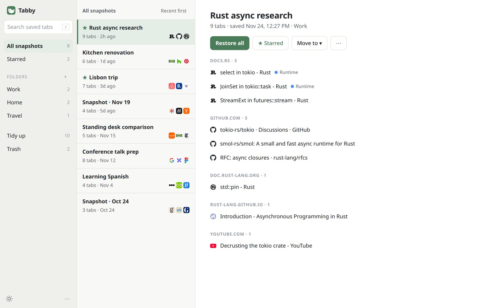
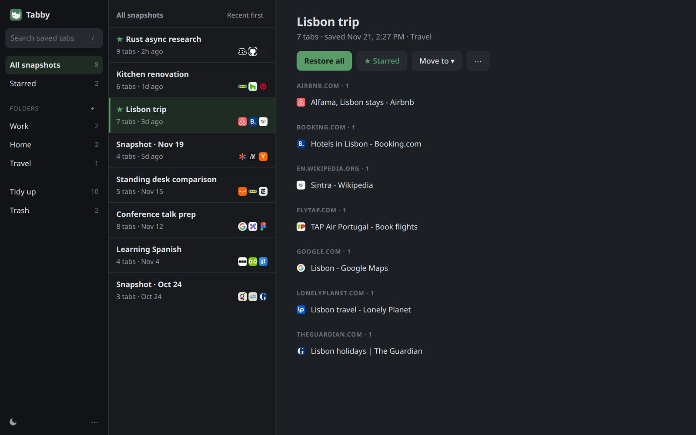
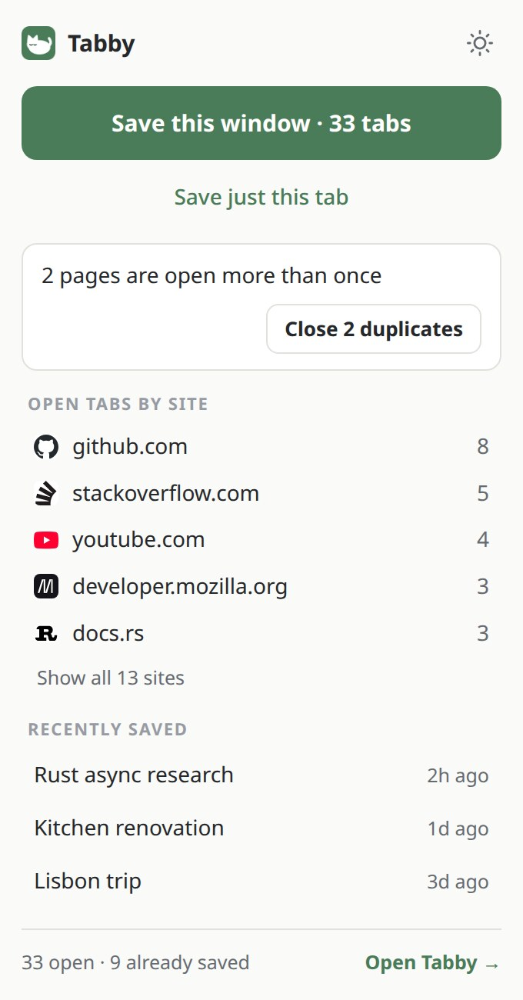
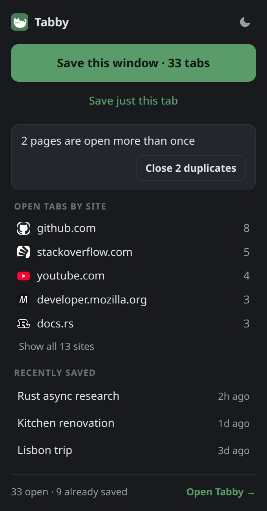
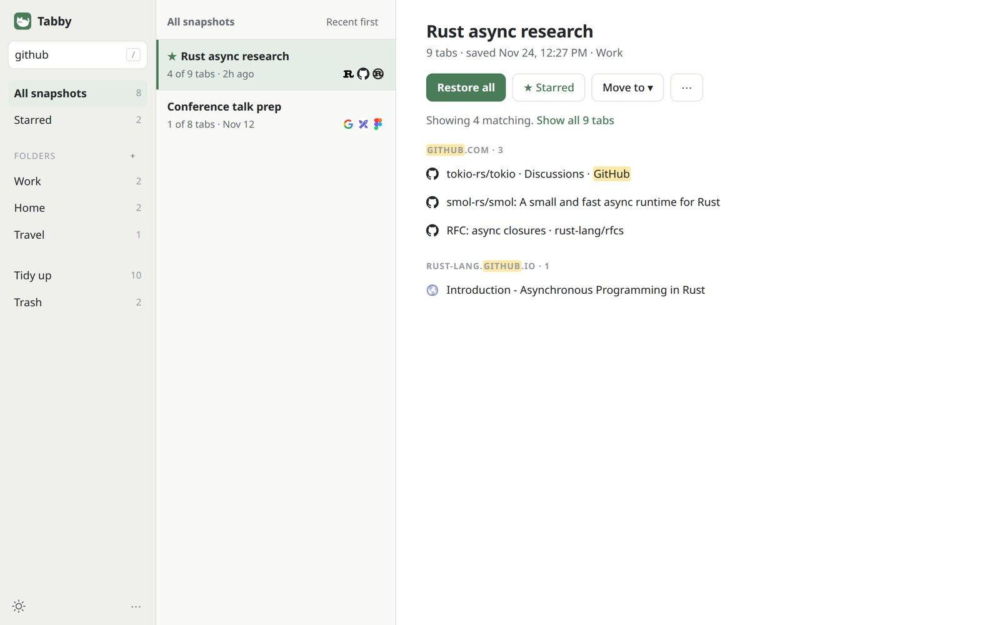
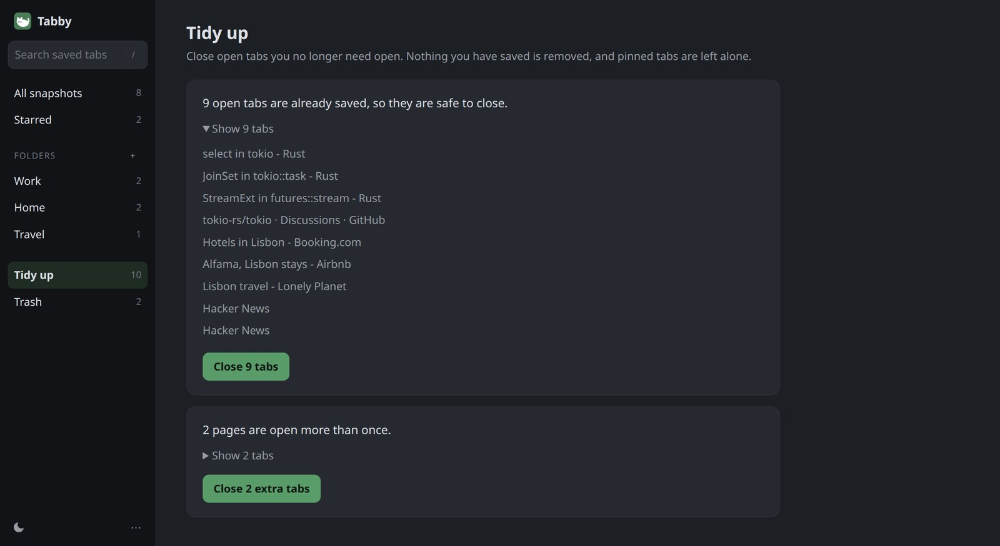

Close your tabs. Keep your place.
Tabby saves every tab in a window with one click, so you can close them without losing anything. Search what you saved, and bring it back when you need it.
For Chrome, Brave, Edge and other Chromium browsers


Open tabs are unfinished thinking.
You keep them open because you are not done with them. Tabby holds on to them for you, so the browser can be empty and nothing is lost.
Save a window in one click
Save the whole window or just the current tab, from the toolbar or the right-click menu. Each save is a snapshot you can name.
Search everything you saved
Find a tab by its title, its site or its address, across every snapshot at once.
Folders and stars
File snapshots into folders such as Work, Home or Travel, and star the ones you return to.
Restore the whole set
Bring a snapshot back in one go, with its Chrome tab groups as they were.
Tidy up what is open
See which open tabs are already saved or open more than once, and close them together. Pinned tabs are left alone.
Nothing is deleted by accident
Opening a saved tab moves it to Trash, with Undo. Things in Trash stay there until you empty it.


One button does the main job
Click the Tabby icon and choose Save this window. The popup also shows which sites your open tabs belong to, how many are already saved, and whether any page is open twice.

Find the tab, not the day you saved it
Type a word and Tabby shows every snapshot that holds a match, with the matching tabs highlighted. Press / to jump to the search box.

Close what you no longer need open
Tidy up lists the open tabs that are already saved, and the pages you have open more than once. You see the list before anything closes, and nothing you saved is removed.
Install it in four steps.
Tabby is not on the Chrome Web Store, so it is loaded by hand. It takes about a minute, and there is nothing to build.
Download
Get the code from GitHub as a zip file and unzip it.
Open extensions
Go to
chrome://extensionsin your browser's address bar.Developer mode
Turn on the Developer mode switch at the top of that page.
Load unpacked
Click Load unpacked and choose the folder you unzipped. Pin Tabby to the toolbar.
In Brave the address is brave://extensions, and in Edge it is edge://extensions.
Your tabs stay on your computer.
A list of everything you have open says a lot about you. Tabby is built so that list never leaves your browser.
No account
There is nothing to sign up for, no server behind it, and no sync to a cloud.
No access to websites
Tabby asks for no permission to read or change the pages you visit, and its code makes no network requests.
A file you can read
Export everything as one plain JSON file for a backup, and import it again on another computer.
One thing to know: the small site icons beside saved tabs are loaded from the sites themselves, so showing an icon contacts that site.
Save the window. Close the tabs.
Free, open source under the MIT licence, and yours to change.